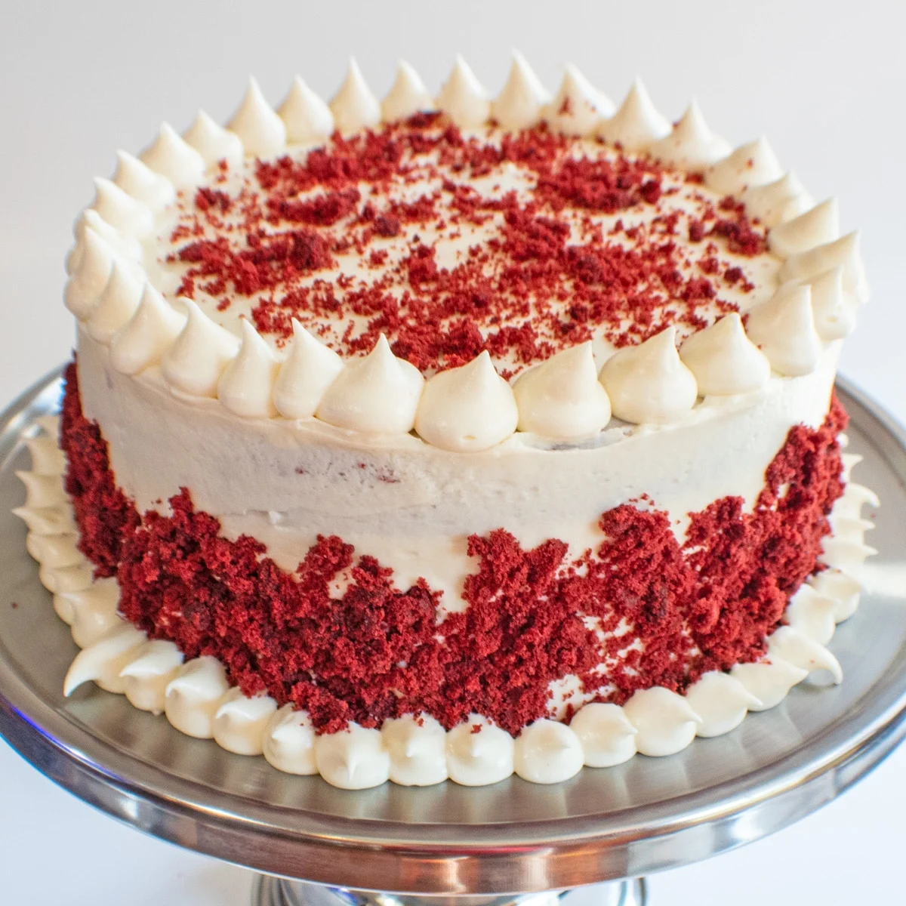
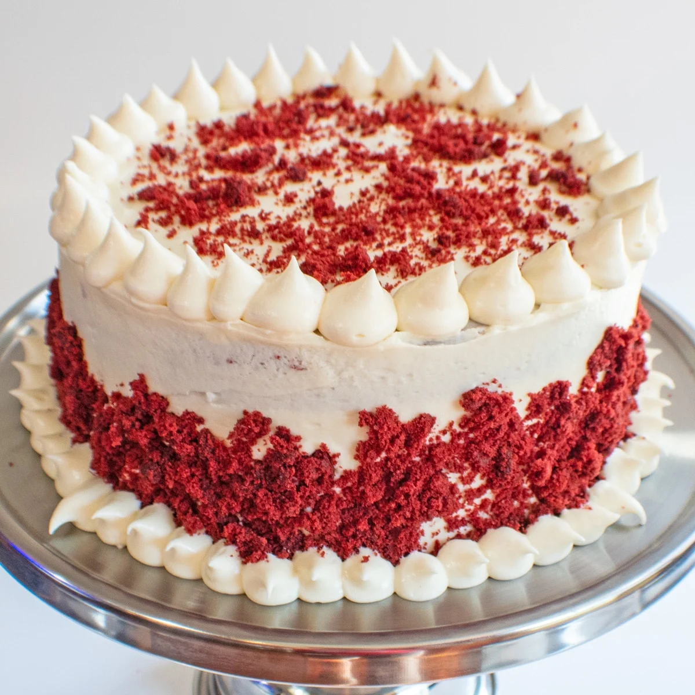

Red Velvet Cake with Cream Cheese Frosting
Description:
Red velvet cake is much more than vanilla cake tinted red.
This recipe produces the best red velvet cake
with superior buttery, vanilla, and cocoa flavors,
as well as a delicious tang from buttermilk.
 

Ingredients:
- 3 cups cake flour
- 1 teaspoon baking soda
- 2 Tablespoons unsweetened natural cocoa powder
- ½ teaspoon salt
- ½ cup unsalted butter
- 2 cups granulated sugar
- 1 cup vegetable oil
- 4 eggs
- 1 Tablespoon pure vanilla extract
- 1 teaspoon distilled white vinegar
- red food coloring
- 1 cup buttermilk
Cream Cheese Frosting:
- 16 ounces full-fat brick cream cheese
- ¾ cup unsalted butter
- 5 cups confectioners' sugar
- 1 and ½ teaspoons pure vanilla extract
- pinch of salt
Instructions:
- Preheat oven to 350°F.
- Whisk the flour, baking soda, cocoa powder, and salt together in a large bowl.
- Beat the butter and sugar together with a handheld or stand mixer until combined, about 1 minute.
Add the oil, egg yolks, vanilla extract, and vinegar and beat for 2 minutes.
- Add the dry ingredients to the mixer, alternating with the buttermilk.
Beat in your desired amount of food coloring until combined.
Beat the 4 egg whites until fluffy peaks form, about 3 minutes.
Gently fold into cake batter.
- Divide batter between cake pans and bake for 30-32 minutes.
Bake until the tops of the cakes spring back when gently touched.
Careful not to overbake as the cakes may dry out.
Remove cakes from the oven and cool completely before frosting and assembling.
- In a large bowl using a handheld or stand mixer, beat the cream cheese and butter together until smooth, about 2 minutes.
Add the confectioners' sugar, vanilla extract, and a pinch of salt.
Beat for 3 minutes until completely combined and creamy.
- Using a large serrated knife, slice a thin layer off the tops of the cakes to create a flat surface.
Place 1 cake layer on your cake stand and evenly cover the top with frosting.
Top with 2nd layer and spread remaining frosting all over the top and sides.
- Refrigerate cake for at least 30-60 minutes before cutting.
This helps the cake hold its shape when cutting.